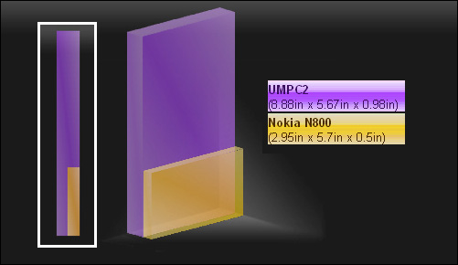
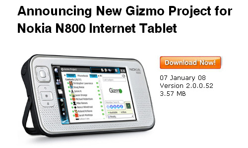

Somewhere along the line, the OSNews review of the Nokia N800 passed by us without a mention. It’s a traditional review (unlike some), with all the right values. One of the better reviews, IMO, and one I’d definitely send someone to who wanted to know more about the device. Eugenia Loli-Queru (formerly the OSNews editor-in-chief) wrote it, and she was kind enough to point out an error in my own writeup (Thanks, Eugenia!).
Author Archive for RogerS
Note: Links may not work or may take you to an archived page at the Internet Archive.
Here’s my review of the Nokia N800 Internet Tablet, the gosh-darned most revolutionary device around, smaller, lighter, better-screened, less-expensive and capable of see-me phone calls at voip prices — what do you think, will I like it?
But first, let’s get the formalities out of the way. I’m a fanboy of anyone who shows egregious genius. The makers/builders of the internet tablet twins qualify on several counts. My attitude shows in everything I write about the 770 and the N800. Secondly, speaking my opinion and wanting to further the development of the scene has qualified me to purchase both a 770 and an N800 at steep discount — 58 and 68 percent, respectively, as one of 500 participants in both the 770 and the N800 developer-device programs. (Of course, I know people who got them free!)
So, here’s my review:
The Nokia N800 Internet Tablet came as a shock to observers of the web tablet scene. No one expected Nokia to expand its line and push the tablet envelope so soon and so far, considering that widespread distribution in the U.S. occurred only 12 months ago.
But the strength of the 770’s appeal apparently persuaded Nokia to capitalize on its first-to-market advantage and hug the internet tablet to its N-series, smart-phone bosom. (Hence the “N” prefixing the name.)
Anyone who uses one of these tablets soon experiences a glowing recognition that, holy cow!, the internet doesn’t have to be confined to a desk or laptop-friendly chair. Now you can surf standing up, walking around, riding the train and so on, just as you can use a phone untethered from a phone jack.
This comparison to the cellphone’s liberation of movement comes from Ari Jaaksi, the head of Nokia’s open-source software group and the internet tablet team specifically. And it’s critical to understanding why the N800 and the 770 don’t fit into any neat categories that other reviewers seem to want to force them into.

The Nokia N800 is one-sixth the size of a UMPC (graphic from sizeasy)
By my count, the 770 was at least the eighth — and not the first — entrant into the web tablet scene. Last year, uncounted others joined in, primarily “ultra-mobile” PC’s. In general, these all incorporate WiFi, eschew keyboards and utilize advertising with people surfing on a couch with their feet resting on the coffee table or while on the move.
People who say, “I don’t need to pay $400 to buy a tablet just to surf a little more conveniently” are possibly the same people who said there’s always a payphone around so no one has a reason to buy a cellphone. Or who insisted that picture quality was so significant that cellphones and cameras were just stupid to combine. Eventually these folk will see the light, I guess.
The 770 and N800 predecessors all failed miserably. Almost all antedated widespread home broadband and appearance of the $20 wireless router, tried to “use” Linux instead of “live and breathe” Linux, and failed to appreciate certain design requirements.
I don’t know if Nokia studied these failures, but it’s clear that the early design decisions were sensitive to what could cause rejection of a walkaround web device. Things like:
– Too small a screen. If your screen doesn’t show the full width of a web-page, the surfing isn’t sub-optimal, it’s abysmal. Therefore, the screen must be at least 800 pixels wide.
– Too big/heavy. If you can’t carry it around without thinking about it, carry it everywhere, then it’s not going to gain traction. Possibly their cellphone experience guided them here, but you can see that Nokia’s designers set “large pocket” and “8 ounces” as their limits.
– Too expensive. I don’t expect anyone at Nokia wanted their tablet to fall outside their phone-pricing experience. A $2000 OQO-like price wouldn’t fit anywhere.
If you base your design on these criteria, you very quickly jettison things like keyboards, disk drives and operating systems you have to pay to license. You spend all your money on the jewel of a display, with 225 pixels per inch resolution.
Strategically, Nokia opted to enlist and encourage the Linux community. Again, maybe their experience with a non-desktop Linux proved lucky, but as far as possible they have chosen to go mainstream. That means not just using Linux, but building Linux up for everyone else. Seeding the developer community with devices is good, but who remembers that the 50,000 euros collected from the initial developer device sales went to the Gnome Foundation, not to Nokia? Nokia has paid Linux developers and contributed code. They’re good citizens.
So Linux on the internet tablet isn’t free. But Nokia is getting the most bang for its OS buck this way, which previous Linux-y tablets failed to do.
And does this mean that there will be non-Nokia tablets running Maemo in future, with Nokia getting not one penny in royalties? Yes, I expect so. That’s the way it works.
Ok, so where’s the N800 part of this review?
The N800 hardware is, as you would expect, superior to the earlier hardware — more memory, faster operation (CPU, DSP). It also rather off-handedly makes possible the killer app the web tablet has always needed.
With the N800’s webcam, see-me phone calls finally work. They’re dead easy and you don’t have to pay outrageous cellphone prices because they’re made using VoIP.
And because your N800 has the requisite phone attributes — lightweight, carry it with you — you can make this call with the same kind of move-around-the-home-or-office-while-you’re-talking nonchalance that any phone call has. This aspect is new and familiar at the same time. It’s the web-we-want conjoined with the anywhere-you-want side of cellphones.
Take it from me, see-me calls are just ... natural. When you don’t have to decide up-front, “I want to pay extra for this, so it better be worth using,” there’s an immediate acceptance of “this is the way it’s meant to be.” And it’s the kind of thing that makes people buy a new device, the way Visicalc (the first spreadsheet) made buying one of those new-fangled Apples worthwhile 20-plus years ago. The step-in price is reasonable, the experience is unique and persuasive immediately, and you don’t worry that “this is going to cost and cost and cost.”
You won’t hear this described as “video conferencing” or “video calls” next year, btw. Those names are so Flash Gordon in their invocation of the future. So don’t trust that any reviewer who uses one of those terms has any idea of what’s coming. Video conferences are what the guy holding a Treo expects to happen, once Verizon offers it as part of a $120-a-month data plan.
Some users wonder about why the N800 jettisons the useful screen cover that the 770 comes with. It’s so you’re always able to get a call. Putting on the 770’s cover doesn’t turn off the WiFi (or Bluetooth), but it breaks the wireless connection. Users make it a physical representation of “I’m putting my device to sleep.” You don’t put your phone to sleep, and the N800 behaves similarly.
And it makes a world of difference between these tablets and laptops that really do sleep. Your tablet is just on. You start using it. No delay, no wakeup, no nothing. I’ve always regarded the 770 as “instant on” because it’s live the moment the screen cover comes down. But the “never off” side of the N800 is better, and I’m more comfortable with keeping it on all day and connected to my network than I have been with the 770.
The N800 has enhanced sound, sleeker design and top-of-the-device buttons that went from easy-to press to hard-to-press. (As did the front-side buttons.) All from cellphone-experience, I think — the design needs to say “next year” not “last year” but still travel in the handbag, backpack or briefcase, where it’ll get bumped a bit. And though the rationale for an internet tablet is centered on the internet experience, it’s quite possible some iPod money will go towards the consumer’s purchase, so the sound had better be worth hearing.
The big failing of the N800 so far seems to be a missing FLV codec in its Flash 7 plugin for the Opera-for-devices browser. That means YouTube videos are unplayable directly. (Workaround one: use my.orb. Workaround two: use Vidconvert.) And, without any official announcements, it seems the consensus has become that if you can’t do YouTube video you can’t claim to be web-video-capable. Forget everything else, YouTube is the sine qua non. This must sting at Nokia, because of course that undercuts the N800 just where it’s intended to settle.
Consequently, we’ve already heard that an upgraded Flash and/or browser are in the works.
So how good is the N800, compared to other devices? Well, if you’re a businessman, you can use an internet tablet or a UMPC to surf the web at 800-pixel-width. To control your desktop computer remotely while you’re in a meeting and want to look at some file or other back at your desk. To read PDFs. To look at (or edit) Word documents or Excel spreadsheets. To connect to the internet in any WiFi cloud or using a cellphone. To play a variety of games. To read on.
You might prefer the UMPC because its 800x480 screen is physically bigger, at least in the current generation. The larger size may make the remote operations easier. You can also make use of the superior text-to-speech technology on the Windows platform and have your tablet read to you on your morning drive. Plus you have Powerpoint. And then there’s Solitaire, for those who really need it.
And handwriting recognition. Let us not leave out that superiority. The N800 on the other hand:
– costs $500-$800 less
– weighs 7.2 ounces, compared to 29 ounces for the Asus R2H, for example - is smaller
– is already in its second-generation, benefitting from the lessons learned the first time around
Is the N800 better than the 770?
I think the speed, browser-and-Flash and OS improvements make it a preferable device. The webcam-with-Skype turns the N800 into a nonpareil. When Skype gets here, of course.
That said, the top-of-the-device rocker button with the + and - zoom is far easier to use on the 770 than the new formation, and this is significant for use of the internet tablet as an e-book reader. You see, FBReader utilizes + and - to advance (or retreat) in the e-text you’re reading, and it’s just plain easier. Not to mention that, sans cover, the 770 weighs only 6 ounces, which is easier to hold up when you’re lying in bed, reading before falling asleep.
So I’m keeping the 770 and my wife gets the N800.
— Roger Sperberg
The Register has weighed in on the Nokia N800 Internet Tablet.
Best part:
Wi-Fi is certainly the preferred connection mechanism for the device, which will happily connect to a network, download RSS feeds and email, and disconnect, all without the user being aware. Indeed, whilst wandering around London with the N800 in my pocket it had been downloading up-to-date information without my knowledge. In a mobile phone such behaviour would be annoying, as it would probably incur network charges, but on a Wi-Fi tablet it was pleasant to have this information close to hand when I wanted it, without having to think about when to connect or where.
Can’t say that I agree with all of reviewer Bill Ray’s opinions or conclusions. But isn’t that always the case? (And I have my say here.) Wrapup line: “The Nokia N800 is a fun toy that could possibly be the future of mobile telephony. Or perhaps not.” Gotta Have It score: 75%.
ComputerWorld reviews the Nokia N800 Internet Tablet. In short, they still don’t get it. Hey, guys! It’s not about building a better PDA! The 770 and N800 have untethered the internet — you can experience the walkaround web. That’s someplace you just can’t get using a cellphone or PDA or laptop.
Here’s a taste of what to expect if you go look at the earnest writeup: “Most gadget lovers would do better with a more flexible, less expensive smart phone.” Well, I guess I’ve been put in my place. I’m a mere gadget lover.
But here’s a comment that Ari Jaaksi and the tablet team need to make note of. The reviewer, David Haskin, writes, “Our attempts to watch video clips streaming from YouTube, for instance, were a disaster.” Video on the web now equates to YouTube. We’re reached the point where if you don’t have an FLV codec or some better way to watch those videos, you’re considered to be non-web-video capable.
Added later:
Digit Magazine, an aggregator of IDG publications, has David Haskin’s Computer World review posted (sans source credit).
Well, either my evangelist credentials are good enough or the lack of progress on my e-book-browser plugin project wasn’t discouraging.
Whichever it is, I got my developer device code fifteen minutes ago, entitling me to purchase an N800 at a steep discount. Hooray!
Adobe. Nokia. Opera. (Listed alphabetically.) Which of these companies is to blame for the Nokia N800 Internet Tablet’s woeful Flash situation?
Does Adobe disdain us Internet Tablet users? Is it dragging its feet in supplying the most current software for this revolutionary device?
Is Opera unable to offer a small-enough, powerful framework? Or is there a licensing (read: money) issue?
Is Nokia pushing Adobe and/or Opera hard enough? Does Nokia need to swallow hard and pay stiffer fees to get the current capabilities?
Somewhere in here is some intransigence or ignorance that needs to be overcome.
What can we IT users do to get Flash all the way? And who is it we need to pester?
Because this is just not acceptable.
— Roger Sperberg
Thoughtfix posted a report yesterday at his blog that a 4GB SD card works fine in his Nokia N800 Internet Tablet.
And both jbj in a comment to that blog and a post here at ITT forums by flareup indicate they have two 4GB cards their devices. 8GB!
That’s so much more than all the books I have. But if you want to carry around movies . . . then that’s the kind of elbow room you want, I think.
— Roger Sperberg
This is my fourteenth blog item about the Nokia N800. I want to thank Nokia for lending me a device to review — it sure is easier to think about things to write about it when you’ve got one in your hands. I sure will be sorry when I have to return it. (Hint, hint.)
– Roger Sperberg
What accounts for the improved score of the N800 Internet Tablet at C|NET, do you think? (7.7 out of 10, up from 4.9 last year.) Is the OS that much better? The webcam so dazzling? The new, sleek appearance suddenly, reassuringly au courant? Maybe it’s just the step up to Flash 7?
Or maybe our mainstream technology writers are grudgingly beginning to recognize something new has appeared. That a device in a new category should not be assessed by the criteria of convergent PDA-cellphones or small laptops or game devices or extravagantly expensive mini-Win-boxes.
Plus Origami (the ultra-mobile PC) showed up. And the iPhone. The super-hype around them validated the existence of this not-a-replacement-for-your-computer, bigger-than-a-PDA, keyboardless device with its wide-as-a-web-page screen. That’s what happened.
* * *
Here’s what C|NET doesn’t give the Internet Tablet credit for:
- the pocket-sized, wide-as-a-webpage display (225-pixels-per-inch!)
- the $400 price
- hitting its second-generation before anybody else can match its capabilities
- Nokia’s astute collaboration with the open-source community and the bounty of applications users have access to, free
- that under-8-ounce weight
- the no-sleep-mode, always-on responsiveness
Plus one more thing — super-simple, internet-priced, see-me phone calls with Skype. [OK, just the simple face-to-face thing for now, with the universe of Skype users still to be delivered.]
I tell you what, Bonnie, I give it a score of 18 on a scale of 10, and mark it down 1.2 points for making me go to Orb to watch YouTube videos.
Gosh, when do you think a UMPC will be as small, as light, as inexpensive as the N800? Ever? Maybe you want to re-think what’s important in your grading.
— Roger Sperberg

A first for me: on the train ride in from Montclair today, the fellow sitting next to me was another Internet Tablet user, which we discovered when I pulled out an N800 to work on. Having a particular interest in the Gizmo Project, he suggested we talk later, Gizmo to Gizmo, N800 to N800 (or maybe it was N800 to 770).
As it happens WiFi is conscientiously blocked where I work, so I’ll have to try this later, perhaps tonight. But a visit to the Gizmo Project (from which I’ve been absent, lo this last half year) shows that versions for the N800 and the 770 are both available (not to mention the Nokia N80, one of the six or more WiFi-capable Nokia cellphones). (Screenshots link from here [N800] and here [770].)
Gizmo, of course, is SIP-based VoIP, with free computer-based calls (that includes Internet Tablets) to other Gizmo users or any SIP-based software, such as Google Talk. This is as opposed to proprietary approaches like Skype. The Gizmo Project’s value-add is that it offers users the option to pay nominal fees to connect to landline and mobile phones.
I’ve used Gizmo, and I’ve used Skype, and I’ve used Google Talk, and I’ve used Vonage, and I’ve used cellphones (Verizon, Sprint, T-Mobile), and so on, and so on. (Landlines!) We all have. I know that pointing to another way to talk to people doesn’t make your heart beat faster, even if it does use a non-proprietary protocol. And I can scarcely think of times when I’ve had fewer than 2 or 3 options available to make a call at one time or location. But …
But Gizmo lets you talk using your Internet Tablet to anyone with any phone. Now. (Actually, dating back to July. Some months yet before Skype joins the fray.) That’s a big step up from “talk to other people with Google Talk on their computer.”
Sometimes I’m so busy with getting somewhere, I don’t see that the landscape has changed. Drastically.
Maybe Gizmo will make my heart beat faster after all …
— Roger Sperberg